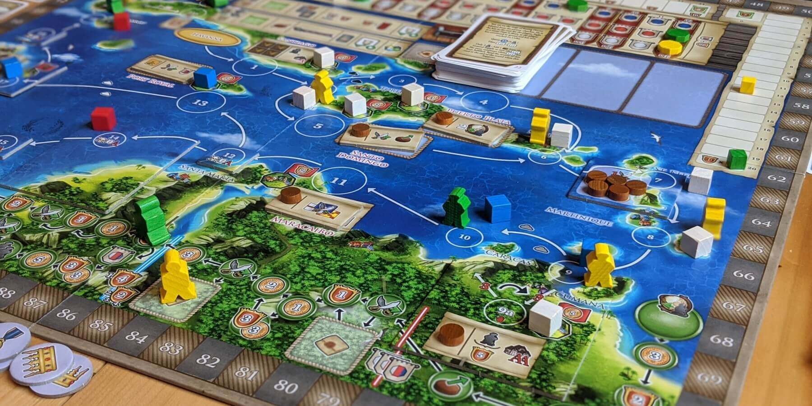
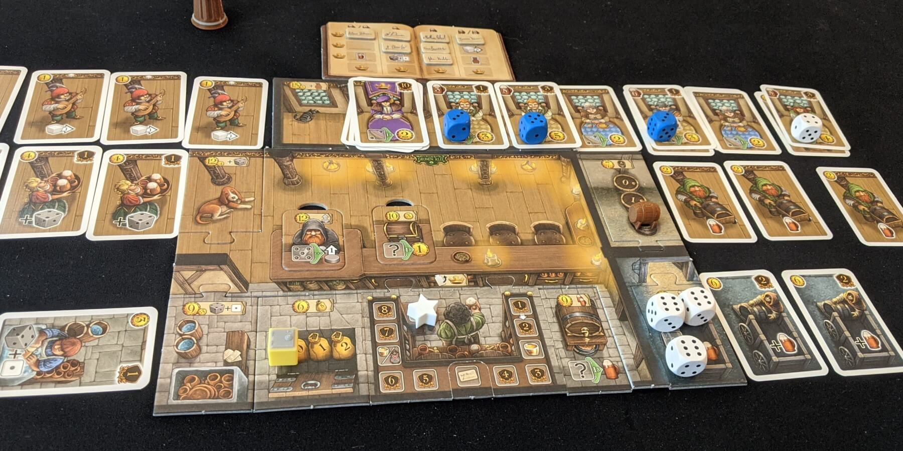
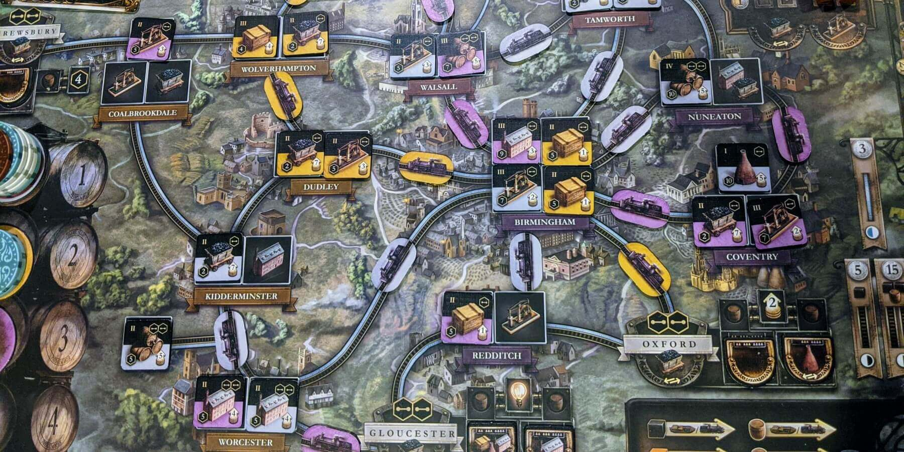

If you like Great Western Trail, try these 3 games


Great Western Trail is an incredible strategy game that seems to evolve every time you play it. Whether you're moving your train, going cowboys, or laying down new buildings out West, your strategy (and its effectiveness) will vary significantly between games.
The games on this list will provide a similar challenging experience. What you do on your turn is relatively simple, but you'll be working toward a grand strategy that may or may not pan out!
Maracaibo

Maracaibo is another rondel game, also by Alexander Pfister. You'll be sailing your ship around the Caribbean, visiting cities and villages to perform various actions. This game has many similarities to GWT, but Maracaibo has an added layer of depth in its hundreds of unique cards. Maracaibo also has an amazing campaign mode, and the map and mechanics will evolve each time you play.
Cards have many types of benefits in Maracaibo - you can increase your money production, gain a new passive ability, or even hire assistants that provide a private action (similar to buildings in GWT). However, you can also discard a card to use its depicted good or item icon to complete a delivery or quest. You'll have to plan ahead and constantly weigh your options with these dual-purpose cards - should you deliver this card for its Corn, or buy it to hire the Explorer assistant?
Unlike GWT, there are only 4 rounds in Maracaibo. When someone reaches the end of the path in Maracaibo, the round ends immediately, and everyone moves their ships back to the starting space. This adds time pressure that forces everyone to prioritize which spaces they really need to visit, and you'll need to be flexible if someone jumps far ahead unexpectedly.
Maracaibo has tons of viable strategies you can pursue, and you'll need several plays to figure out what works best. If you're ready for another heavy game, give Maracaibo a try!
Buy Maracaibo on Amazon
Taverns of Tiefenthal
Taverns of Tiefenthal is a deck-building game about brewing beer, serving customers, and trying to control the chaos that is running a tavern. While there is more than a bit of luck in this game, it's not lacking in strategy. This is a great option if you'd like a more light-hearted game to balance with Great Western Trail!
At the start of each round, you'll draw cards from your deck, placing each at its corresponding station - dishwashers to the kitchen, servers to the floor, and guests to the tables. You keep drawing cards until all your tables are filled! Then, you roll dice and draft them one at a time, picking the pip values that work best with your cards. You produce beer with a 1 or 6, move up the bonus track with a 5, or serve guests with a variety of dice for money. You can then use these resources to add new cards to your deck or upgrade your tavern to improve each of your future turns!
Taverns of Tiefenthal strikes a good balance between silly and strategic, and every turn is fun since your tavern only can get better. If you want to try a new type of game or just want something more casual, you can't go wrong with this one!
Buy Taverns of Tiefenthal on Amazon
Brass Birmingham
Brass Birmingham is a deep strategy game about building canal and rail networks during the Industrial Era. Everyone benefits as these networks grow, and you'll have to stay a step ahead of your opponents to win. Your strategies will feel epic despite each turn being so simple, which is something Brass and Great Western Trail have in common.
The bulk of this game revolves around placing industry tiles on the board and flipping them to score points. Placing a coal or iron tile adds those resources to the board, while other tiles require you to spend them. It's also possible to spend the coal or iron on an opponent's tile, which is a unique aspect of Brass. While you certainly benefit from this, using their resources will help them flip their own tiles!
To add another layer of strategy, turn order each round is decided by how much money you spend on your turn - whoever spends the least goes first next round. You don't want to be going last in the round where you need to make a big play, so timing your actions accordingly is important!
This game gets your brain working in a similar way to Great Western Trail, and you'll find that Brass is also quite difficult to master. Pulling off a big play is extremely satisfying in this game, and you'll want to play again right away.
Buy Brass Birmingham on Amazon
Honorable Mentions
Here are some more games that just have great strategy. It was a close call for some of the games in this section, but we want to expose you to the widest range of games possible!
Orléans is a "bag-building" game where you pull workers of different colors from a bag to determine your available actions. The game starts out the same every time, but your strategy will change considerably based on what you pull from your bag and what your opponents are doing. There is less direct player interaction in this game, though you will be advancing along various tracks, racing to claim big rewards. You have to begin with a solid strategy but stay flexible as the game progresses, as what you pull from your bag may not always be ideal!
Buy Orléans from Capstone GamesTerraforming Mars is a popular engine-building card game where you competitively terraform Mars into a human-habitable state. There are hundreds of cards in this game, all with unique effects that can interact with one another. Your strategy might involve raising animals, developing forests on Mars, or constructing lucrative technology in space. Whichever path you choose, you'll be increasing the temperature, oxygen level, and ocean coverage on Mars to score points. The game ends when all three of these are maxed out, but this may be sooner or later than you anticipated based on what your opponents are doing!
Buy Terraforming Mars on AmazonHeaven and Ale is a rondel game about brewing beer at a monastery, and you'll need to produce enough of each ingredient to make a good batch. You take turns moving to a space, paying for an ingredient tile, and placing it on your board. A tile placed on the shady side of your board will produce money, while placing it on the sunny side will produce that ingredient instead. Choosing how quickly to move along the rondel also takes some careful thought - moving further ahead guarantees your choice of tile, but you forego any tiles you skip over! This game will get your brain working overtime as it combines spatial reasoning with heavy Euro game mechanics.
Buy Heaven and Ale on AmazonDid we miss any good recommendations? Have other feedback for us? Send us an email at support@spiralburst.com and let us know!